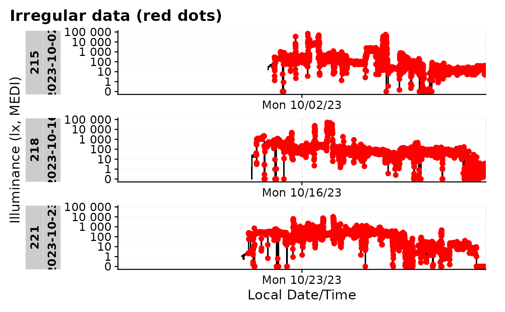

This article focuses on the import from multiple files and participants, as well as the cleaning of the data. We need these packages:
Please note that this article uses the base pipe operator
|>. You need an R version equal to or greater than 4.1.0 to use it. If you are using an older version, you can replace it with themagrittrpipe operator%>%.
From which devices can I import data?
LightLogR aims to provide standard import routines for all devices used in research on personal light exposure. Currently, the following devices are supported:
supported_devices()
#> [1] "Actiwatch_Spectrum" "Actiwatch_Spectrum_de" "ActLumus"
#> [4] "ActTrust" "Circadian_Eye" "DeLux"
#> [7] "GENEActiv_GGIR" "Kronowise" "LiDo"
#> [10] "LightWatcher" "LIMO" "LYS"
#> [13] "MotionWatch8" "nanoLambda" "OcuWEAR"
#> [16] "Speccy" "SpectraWear" "VEET"More Information on these devices can be found in the reference for
import_Dataset().
What if my device is not listed?
If you are using a device that is currently not supported, please contact the developers. We are always looking to expand the range of supported devices. The easiest and most trackable way to get in contact is by opening a new issue on our Github repository. Please see the CONTRIBUTING section for different ways to help and details about how this project handles them.
What if my device is listed but the import does not work as expected?
We regularly find that files exported from the same device model can differ in structure. This may be due to different settings, software or hardware updates. If you encounter problems with the import, please get in contact with us, e.g. by opening an issue on our Github repository. Please see the CONTRIBUTING section for different ways to help and details about how this project handles them.
Are there other ways to import data?
Yes. LightLogR simply requires a data.frame
with a column containing datetime formatted data. Even a
light data column is not strictly necessary, as
LightLogR is optimized for, but not restricted to, light
data. Further, an Id column is used in some functions to
distinguish between different participants.
To make life easier when using functions in LightLogR,
the datetime column should be named Datetime, the id column
Id, and, if present, the melanopic EDI light information
MEDI.
Lastly, you can modify or add import functions that build upon
LightLogRs import functionality. See the last chapter in
this article for more information on that.
Importing data
The first step in every analysis is data import. We will work with data collected as part of the Master Thesis Insights into real-world human light exposure: relating self-report with eye-level light logging by Carolina Guidolin (2023). The data is stored in 17 text files in the data/ folder. You can access the data yourself through the LightLogR GitHub repository.
#this assumes that you downloaded the files into a folder called "data" in the working directory
path <- "data"
files <- list.files(path, full.names = TRUE)
#show how many files are listes
length(files)
#> [1] 17Next we require a time zone of data collection. If uncertain which
time zones are valid, use the OlsonNames() function. Our
data was collected in the “Europe/Berlin” time zone.
#first six time zones from OlsonNames()
head(OlsonNames())
#> [1] "Africa/Abidjan" "Africa/Accra" "Africa/Addis_Ababa"
#> [4] "Africa/Algiers" "Africa/Asmara" "Africa/Asmera"
#our time zone
tz <- "Europe/Berlin"Lastly, the participant Ids are stored in the file names. We will
extract them and store them in a column called Id. The
following code defines the pattern as a regular expression,
which will extract the first three digits from the file name.
pattern <- "^(\\d{3})"Now we can import the data. Data were collected with the ActLumus
device by Condor Instruments. The right way to specify this is through
the import function.
data <- import$ActLumus(files, tz = tz, auto.id = pattern, print_n=33)
#>
#> Successfully read in 1'034'650 observations across 17 Ids from 17 ActLumus-file(s).
#> Timezone set is Europe/Berlin.
#> The system timezone is UTC. Please correct if necessary!
#> Observations in the following 2 file(s) cross to or from daylight savings time (DST):
#> 221_actlumus_Log_1607_20231030121531432
#> 222_actlumus_Log_1020_20231030140039534
#> Please make sure that the timestamps in the source files correctly reflect these changes from DST<>ST.
#> To adjust datetimes after a jump, set `dst_adjustment = TRUE` or see `?dst_change_handler` for manual adjustment.
#>
#> First Observation: 2023-08-14 10:55:21
#> Last Observation: 2023-10-30 15:00:32
#> Timespan: 77 days
#>
#> Observation intervals:
#> Id interval.time n pct
#> 1 201 10s 60042 100%
#> 2 202 10s 59957 100%
#> 3 204 10s 61980 100%
#> 4 205 10s 61015 100%
#> 5 206 10s 60691 100%
#> 6 206 23s 1 0%
#> 7 206 59575s (~16.55 hours) 1 0%
#> 8 208 10s 59853 100%
#> 9 209 10s 60084 100%
#> 10 210 10s 60701 100%
#> 11 212 10s 59478 100%
#> 12 213 10s 59720 100%
#> 13 214 10s 61836 100%
#> 14 214 16s 1 0%
#> 15 214 1197207s (~1.98 weeks) 1 0%
#> 16 215 7s 1 0%
#> 17 215 10s 60707 100%
#> 18 216 10s 61760 100%
#> 19 216 19s 1 0%
#> 20 216 240718s (~2.79 days) 1 0%
#> 21 218 8s 1 0%
#> 22 218 10s 60929 100%
#> 23 218 11s 1 0%
#> 24 219 9s 1 0%
#> 25 219 10s 61634 100%
#> 26 219 16s 1 0%
#> 27 219 583386s (~6.75 days) 1 0%
#> 28 221 9s 1 0%
#> 29 221 10s 62340 100%
#> 30 221 19s 1 0%
#> 31 221 3610s (~1 hours) 1 0%
#> 32 222 10s 61890 100%
#> 33 222 3610s (~1 hours) 1 0%
My import is slow. Why is that and can I speed it up?
There are several possibilities, why the import is slow. The most common reasons are:
The data files are simply large. With short measurement intervals, many participants, and long measurement periods, files for a single study can easily reach several gigabytes. This takes some time to import and is ok.
The data files contain many gaps. During import,
LightLogRchecks for and visualizes gaps in the data. Especially large datasets with small intervals contain many gaps, which can slow down the import process.The device model you are importing from has non-consistent data structures. Some devices have a varying number of rows before the actual data starts. This means a small portion of every file has to be read in and the correct starting row has to be found. This can slow down the import process if you have many files.
If you are experiencing slow imports, you can try the following:
Only read in part of your datasets, or split your dataset into several pieces, that each gets loaded in separately. You can combine them afterwards with
join_datasets().If you have many gaps in your data, you can set
auto.plot = FALSEin the import function. This will eliminate the call togg_overview(), which calculates and visualizes the gaps in the data.
Data cleaning #1
Before we can dive into the analysis part, we need to make sure we have a clean dataset. The import summary shows us two problems with the data:
two files have data that crosses daylight saving time (DST) changes. Because the ActLumus device does not adjust for DST, we need to correct for this.
Multiple Ids have single datapoints at the beginning of the dataset with gaps before actual data collection starts. These are test measurements to check equipment, but must be removed from the dataset.
Let us first deal with the DST change. LightLogR has an in-built function to correct for this during import. We thus will re-import the data, but make the import silent as to not clutter the output.
data <-
import$ActLumus(files, tz = tz, auto.id = pattern, dst_adjustment = TRUE, silent = TRUE)The second problem requires the filtering of certain Ids. The
filter_Datetime_multiple() function is ideal for this. We
can provide a length (1 week), starting from the end of data collection
and backwards. The variable arguments provide variable
arguments to the filter function, they have to be provided in list form
and expressions have to be quoted throughquote(). Fixed
arguments, like the length andlength_from_start\ are
provided as named arguments and only have to be specified once, as they
are the same for all Ids.
data <-
data |>
filter_Datetime_multiple(
arguments = list(
list(only_Id = quote(Id == 216)),
list(only_Id = quote(Id == 219)),
list(only_Id = quote(Id == 214)),
list(only_Id = quote(Id == 206))
),
length = "1 week", length_from_start = FALSE)Let’s have a look at the data again with the
gg_overview() function.
data |> gg_overview()
Looks much better now. Also, because there is no longer a hint about gaps in the lower right corner, we can be sure that all gaps have been removed. The function gap_finder() shows us, however, that there are still irregularities in the data and the function count_difftime() reveals where they are.
data |>
gap_finder()
#> Found 183580 gaps. 847054 Datetimes fall into the regular sequence.
data |>
count_difftime() |>
print(n=22)
#> # A tibble: 22 × 3
#> # Groups: Id [17]
#> Id difftime n
#> <fct> <Duration> <int>
#> 1 221 10s 62341
#> 2 204 10s 61980
#> 3 222 10s 61891
#> 4 205 10s 61015
#> 5 218 10s 60929
#> 6 215 10s 60707
#> 7 210 10s 60701
#> 8 206 10s 60479
#> 9 214 10s 60479
#> 10 216 10s 60479
#> 11 219 10s 60479
#> 12 209 10s 60084
#> 13 201 10s 60042
#> 14 202 10s 59957
#> 15 208 10s 59853
#> 16 213 10s 59720
#> 17 212 10s 59478
#> 18 215 7s 1
#> 19 218 8s 1
#> 20 218 11s 1
#> 21 221 9s 1
#> 22 221 19s 1This means we have to look at and take care of the irregularities for the Ids 215, 218, and 221.
Data cleaning #2
Let us first visualize where the irregularities are. We can use
gg_days() for that.
#create two columns to show the irregularities and gaps for relevant ids
difftimes <-
data |>
filter(Id %in% c(215, 218, 221)) |>
mutate(difftime = difftime(lead(Datetime), Datetime, units = "secs"),
end = Datetime + seconds(difftime))
#visualize where those points are
difftimes |>
gg_days(geom = "point",
x.axis.breaks = ~Datetime_breaks(.x, by = "2 days" )
) +
geom_rect(data = difftimes |> filter(difftime !=10),
aes(xmin = Datetime, xmax = end, ymin = -Inf, ymax = Inf),
fill = "red", col = "red", linewidth = 0.2, alpha = 0.2) +
gghighlight(difftime != 10 | lag(difftime !=10))
All irregular data appear at the very beginning of the data collection. As we are interestet in one whole week of data, we can similarly apply a one week filter on these Ids and see if that removed the irregular data points.
data <-
data |>
filter_Datetime_multiple(
arguments = list(
list(only_Id = quote(Id == 215)),
list(only_Id = quote(Id == 218)),
list(only_Id = quote(Id == 221))
), length = "1 week", length_from_start = FALSE)
data |>
gap_finder()
#> No gaps found
data |>
count_difftime() |>
print(n=17)
#> # A tibble: 17 × 3
#> # Groups: Id [17]
#> Id difftime n
#> <fct> <Duration> <int>
#> 1 204 10s 61980
#> 2 222 10s 61891
#> 3 205 10s 61015
#> 4 221 10s 60839
#> 5 210 10s 60701
#> 6 206 10s 60479
#> 7 214 10s 60479
#> 8 215 10s 60479
#> 9 216 10s 60479
#> 10 218 10s 60479
#> 11 219 10s 60479
#> 12 209 10s 60084
#> 13 201 10s 60042
#> 14 202 10s 59957
#> 15 208 10s 59853
#> 16 213 10s 59720
#> 17 212 10s 59478The data is now clean and we can proceed with the analysis. This dataset will be needed in other articles, so we will save it as an RDS file.
#uncomment next lines to save the data
# if (!dir.exists("cleaned_data")) dir.create("cleaned_data")
# saveRDS(data, "cleaned_data/ll_data.rds")Importing data: Miscellaneous
Other import arguments
Other potentially important arguments are the locale
argument - this is useful if you have special characters in your data
(e.g. German ü or ä) that are not recognized by the default locale. Look
at readr::default_locale() for more information.
The ... argument is passed through to whichever import
function is used for the data. For some devices, it is also used to
provide additional information, such as column_names for
the Actiwatch devices, that differ depending on the language setting of
the device and software. Whether a device requires additional
information can be found in the import documentation (see
import_Dataset()).
Other ways to call import
Instead of using the import function as described above
(import$device()), you can also use the function
import_Dataset() and specify the device as a character
string in the first argument. This might be useful if you want to import
data programmatically from different devices, e.g., through a
purrr::map() function. Only
supported_devices() will be accepted by the function.
Here is an example:
devices <- c("ActLumus", "Speccy")
files_AL <- c("path/to/ActLumus/file1.csv", "path/to/ActLumus/file2.csv")
files_Sy <- c("path/to/Speccy/file1.csv", "path/to/Speccy/file2.csv")
tz <- "Europe/Berlin"
data <- purrr::map2(devices, list(files_AL, files_Sy), import_Dataset, tz = tz)This way, you will end with a list of two dataframes, one with the ActLumus data and one with the Speccy data.
Creating your own import function
Note: This section is for advanced users only. You should be familiar with expressions in R and how to manipulate them.
LightLogR comes with a number of custom import routines
for different devices, that are then implemented into the main import
function, which covers some general aspects and also creates the summary
overview.
If you would like to write your own custom import function,
LightLogR has you covered. First, you can see what makes
all the import functions tick by looking at the included data set
ll_import_expr(). This is a list of all the individual
routines. Let’s have a look at the ActLumus routine
ll_import_expr()$ActLumus
#> {
#> data <- suppressMessages(readr::read_delim(filename, skip = 32,
#> delim = ";", n_max = n_max, col_types = paste0("c", paste0(rep("d",
#> 32), collapse = "")), id = "file.name", locale = locale,
#> name_repair = "universal", ...))
#> data <- data %>% dplyr::rename(Datetime = DATE.TIME, MEDI = MELANOPIC.EDI) %>%
#> dplyr::mutate(Datetime = Datetime %>% lubridate::dmy_hms(tz = tz))
#> }We can see, it is rather simple, just a few lines of code. You can
write your own expression and create an import function with it. The
expression should create a data variable that contains the
import script for the files. At the end of the expression, the
data variable should contain the imported dataset and
include a correctly formatted Datetime column, complete
with the correct timezone.
Here we will create a variation of the old routine, that just adds a short message:
new_import_expr <- ll_import_expr()
new_import_expr$ActLumus_new <- new_import_expr$ActLumus
new_import_expr$ActLumus_new[[4]] <-
rlang::expr({ cat("**Congratulation, you made a new import function**\n")
data
})
new_import_expr$ActLumus_new
#> {
#> data <- suppressMessages(readr::read_delim(filename, skip = 32,
#> delim = ";", n_max = n_max, col_types = paste0("c", paste0(rep("d",
#> 32), collapse = "")), id = "file.name", locale = locale,
#> name_repair = "universal", ...))
#> data <- data %>% dplyr::rename(Datetime = DATE.TIME, MEDI = MELANOPIC.EDI) %>%
#> dplyr::mutate(Datetime = Datetime %>% lubridate::dmy_hms(tz = tz))
#> {
#> cat("**Congratulation, you made a new import function**\n")
#> data
#> }
#> }We can now create a new import function with this expression. The
function will be called import$ActLumus_new().
import <- import_adjustment(new_import_expr)Let us now import a file of the previous dataset, setting the main summary and plotting function silent
data <- import$ActLumus_new(files[1], tz = tz, auto.id = pattern,
auto.plot = FALSE, silent = TRUE)
#> **Congratulation, you made a new import function**